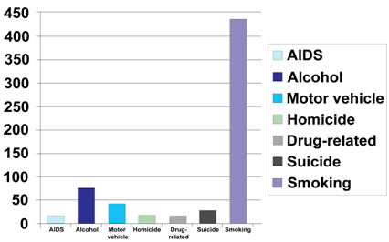

Actual Causes of Death in the United States
The largest contributions to death are a consequence of human behavior. Thus, there is substantial opportunity for cancer control interventions.
Comparative Causes of Annual Deaths in the United States

Sources: (AIDS) HIV/AIDS Surveillance Report, 2004; (Alcohol) CDC. (2004). MMWR, 53(37), 866-870; (Motor vehicle) National Highway Transportation Safety Administration. (2005); (Homicide) NCHS. Vital statistics, 2002; (Drug-related) Mokdad, A.H., Marks, J. et al. (2004). Actual causes of death in the U.S., 2000. JAMA, 29(10),1242; (Suicide) NIMH. (2003 [updated 2006]). In harm's way-Suicide in America;
{kind=link}
Smoking Status and Risk of Death
Woloshin S, Schwartz LM, Welch HG. The Risk of Death by Age, Sex, and Smoking Status in the United States: Putting Health Risks in Context. J Natl Cancer Inst. 2008 Jun 18;100(12):845-53.
This article provides one-page charts that present the 10-year chance of dying from various causes according to age, sex, and smoking status.
Annual Smoking-Attributable Mortality, Years of Potential Life Lost, and Productivity Losses (United States, 1997—2001).
This page provides CDC calculated national estimates of annual smoking-attributable mortality (SAM), years of potential life lost (YPLL) for adults and infants, and productivity losses for adults.
Weight and Risk of Death
Cause-specific excess deaths associated with underweight, overweight, and obesity.
This article estimates cause-specific excess deaths associated with underweight (BMI <18.5), overweight (BMI 25-<30), and obesity.
Excess deaths associated with underweight, overweight, and obesity.
This article provides estimates on the number of excess deaths in 2000 associated with given BMI levels.